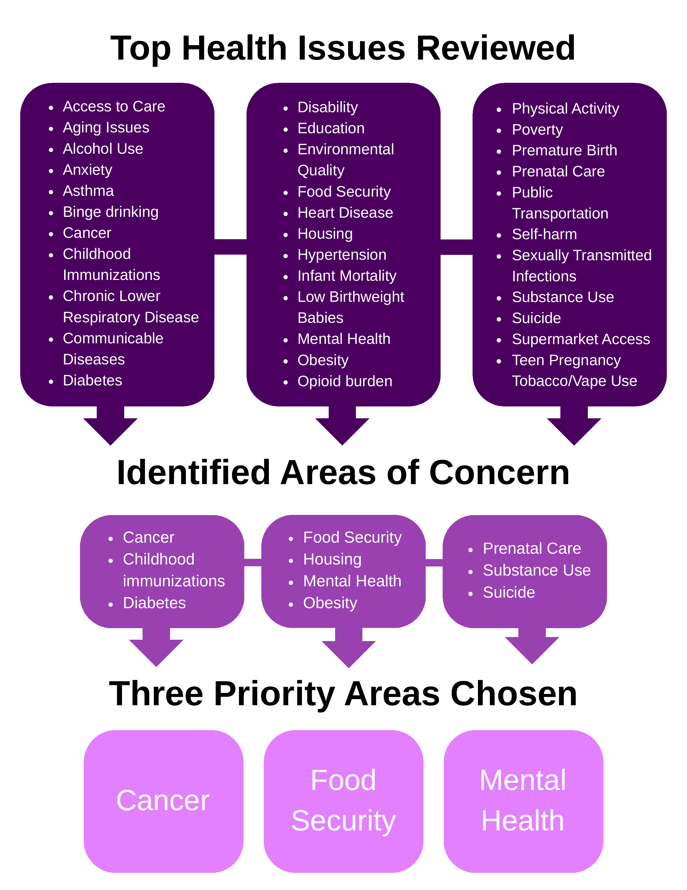

| Table 'tbl-top-areas-concern' not found in workbook. |
14 Triangulate the Data
Following the MAPP 2.0 framework, health priorities were identified through a rigorous process of data triangulation. This method synthesized findings from three essential assessments:
Community Status Assessment: Analyzed quantitative health outcomes and social determinants of health to identify existing inequities. This includes a review of demographics, mortality, leading health issues, and health behaviors.
Community Context Assessment: Captured qualitative insights and lived experiences to understand the human impact of social systems. This includes review of the forces of change assessment, community asset survey, focus groups, key informant interviews, community health survey, and partner input.
Community Partner Assessment: Evaluated the collective capacity of the public health network to address identified disparities. Continuous evaluation occurs during collaborative meetings and at the Public Health Summit.
By integrating these perspectives, the CHIP Steering Committee identified cross-cutting themes that moved beyond individual behaviors to address the root causes of health inequity. This process directly informed the selection of the final three priority areas, ensuring they are grounded in both empirical data and community-voiced needs.
14.0.1 Data Review Guide
To support these assessments, a Data Review Guide Summary was developed that synthesizes over 150 data sources and health indicators. This resource combines the many datasets into an accessible format for partners, offering a clear look at health trends over time. By streamlining this information, the guide allows partners to monitor progress and make data-driven decisions more effectively.
14.0.2 Data Summary Table
To identify common themes across various data collection methods, a crosswalk table Table 14.1 was developed to track the top three health priorities from each assessment and survey. This tool enables the committee to synthesize the many data points and visually identify where community concerns, provider perspectives, and secondary data intersect. By highlighting these overlapping priorities, the CHIP Steering Committee can ensure the final health improvement plan addresses the most consistent and pressing needs of the community.
14.0.3 Data Review and Priority Selection Process
Figure 14.1 depicts the evolution of the prioritization process. It begins with a comprehensive review of all data topics, moves into the identification of major concerns across the eight assessment sources, and concludes with the selection of the final CHIP priority areas. This visual ensures transparency in how the CHIP Steering Committee moved from raw data to community-validated priorities.
